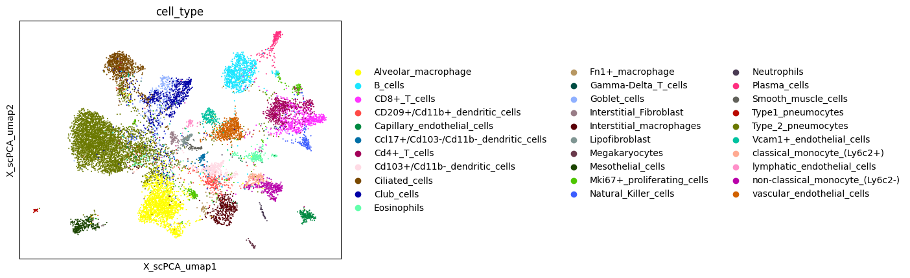
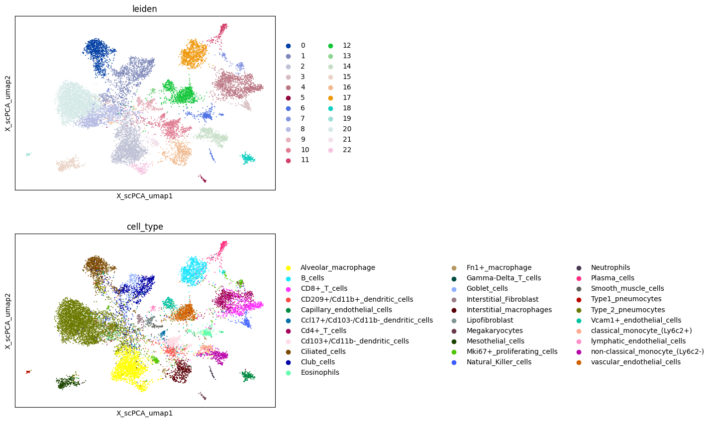

[1]:
from dotenv import load_dotenv
load_dotenv()
import scllm as sl
import scanpy as sc
import pandas as pd
from langchain_openai import ChatOpenAI
Annotate cell types#
PBMC dataset#
In this tutorial we will use Chat GPT to annotate cell types.
[29]:
pbmc = sc.datasets.pbmc3k_processed()
[30]:
openai_model = "gpt-4o-mini"
llm = ChatOpenAI(temperature=0.0, model=openai_model)
[31]:
pbmc
[31]:
AnnData object with n_obs × n_vars = 2638 × 1838
obs: 'n_genes', 'percent_mito', 'n_counts', 'louvain'
var: 'n_cells'
uns: 'draw_graph', 'louvain', 'louvain_colors', 'neighbors', 'pca', 'rank_genes_groups'
obsm: 'X_pca', 'X_tsne', 'X_umap', 'X_draw_graph_fr'
varm: 'PCs'
obsp: 'distances', 'connectivities'
[32]:
sc.tl.leiden(pbmc, flavor="igraph", n_iterations=2)
[33]:
sc.pl.umap(pbmc, color='leiden')

To annotate the cells we simply use the annotate_cluster function. This will iterate through each cluster and try to determine the most likely cell types.
[34]:
sl.tl.annotate_cluster(pbmc, 'leiden', llm, use_raw=True, top_genes=30, num_samples=20)
[36]:
sc.pl.umap(pbmc, color=['scllm_annotation', 'louvain'], ncols=1)

Angelidis#
In this example we will use the annotate_cluster function to annotate the cells in the Angelidis dataset.
[7]:
angelidis = sc.read_h5ad('/Users/harald/Downloads/umap_1.h5ad')
[8]:
sc.pl.embedding(angelidis, 'X_scPCA_umap', color='cell_type')

[18]:
sc.tl.leiden(angelidis, flavor="igraph", n_iterations=2, neighbors_key='X_scPCA')
[20]:
sc.pl.embedding(angelidis, basis='X_scPCA_umap', color=['leiden', 'cell_type'], ncols=1)

[27]:
angelidis.layers['log1p'] = sc.pp.log1p(angelidis.layers['counts'])
[28]:
sl.tl.annotate_cluster(angelidis, 'leiden', llm, top_genes=30, num_samples=20, layer='log1p', method='wilcoxon')
/Users/harald/Documents/opt/scllm/.venv/lib/python3.12/site-packages/scanpy/tools/_rank_genes_groups.py:435: PerformanceWarning: DataFrame is highly fragmented. This is usually the result of calling `frame.insert` many times, which has poor performance. Consider joining all columns at once using pd.concat(axis=1) instead. To get a de-fragmented frame, use `newframe = frame.copy()`
self.stats[group_name, "names"] = self.var_names[global_indices]
/Users/harald/Documents/opt/scllm/.venv/lib/python3.12/site-packages/scanpy/tools/_rank_genes_groups.py:437: PerformanceWarning: DataFrame is highly fragmented. This is usually the result of calling `frame.insert` many times, which has poor performance. Consider joining all columns at once using pd.concat(axis=1) instead. To get a de-fragmented frame, use `newframe = frame.copy()`
self.stats[group_name, "scores"] = scores[global_indices]
/Users/harald/Documents/opt/scllm/.venv/lib/python3.12/site-packages/scanpy/tools/_rank_genes_groups.py:440: PerformanceWarning: DataFrame is highly fragmented. This is usually the result of calling `frame.insert` many times, which has poor performance. Consider joining all columns at once using pd.concat(axis=1) instead. To get a de-fragmented frame, use `newframe = frame.copy()`
self.stats[group_name, "pvals"] = pvals[global_indices]
/Users/harald/Documents/opt/scllm/.venv/lib/python3.12/site-packages/scanpy/tools/_rank_genes_groups.py:450: PerformanceWarning: DataFrame is highly fragmented. This is usually the result of calling `frame.insert` many times, which has poor performance. Consider joining all columns at once using pd.concat(axis=1) instead. To get a de-fragmented frame, use `newframe = frame.copy()`
self.stats[group_name, "pvals_adj"] = pvals_adj[global_indices]
/Users/harald/Documents/opt/scllm/.venv/lib/python3.12/site-packages/scanpy/tools/_rank_genes_groups.py:461: PerformanceWarning: DataFrame is highly fragmented. This is usually the result of calling `frame.insert` many times, which has poor performance. Consider joining all columns at once using pd.concat(axis=1) instead. To get a de-fragmented frame, use `newframe = frame.copy()`
self.stats[group_name, "logfoldchanges"] = np.log2(
/Users/harald/Documents/opt/scllm/.venv/lib/python3.12/site-packages/scanpy/tools/_rank_genes_groups.py:435: PerformanceWarning: DataFrame is highly fragmented. This is usually the result of calling `frame.insert` many times, which has poor performance. Consider joining all columns at once using pd.concat(axis=1) instead. To get a de-fragmented frame, use `newframe = frame.copy()`
self.stats[group_name, "names"] = self.var_names[global_indices]
/Users/harald/Documents/opt/scllm/.venv/lib/python3.12/site-packages/scanpy/tools/_rank_genes_groups.py:437: PerformanceWarning: DataFrame is highly fragmented. This is usually the result of calling `frame.insert` many times, which has poor performance. Consider joining all columns at once using pd.concat(axis=1) instead. To get a de-fragmented frame, use `newframe = frame.copy()`
self.stats[group_name, "scores"] = scores[global_indices]
/Users/harald/Documents/opt/scllm/.venv/lib/python3.12/site-packages/scanpy/tools/_rank_genes_groups.py:440: PerformanceWarning: DataFrame is highly fragmented. This is usually the result of calling `frame.insert` many times, which has poor performance. Consider joining all columns at once using pd.concat(axis=1) instead. To get a de-fragmented frame, use `newframe = frame.copy()`
self.stats[group_name, "pvals"] = pvals[global_indices]
/Users/harald/Documents/opt/scllm/.venv/lib/python3.12/site-packages/scanpy/tools/_rank_genes_groups.py:450: PerformanceWarning: DataFrame is highly fragmented. This is usually the result of calling `frame.insert` many times, which has poor performance. Consider joining all columns at once using pd.concat(axis=1) instead. To get a de-fragmented frame, use `newframe = frame.copy()`
self.stats[group_name, "pvals_adj"] = pvals_adj[global_indices]
/Users/harald/Documents/opt/scllm/.venv/lib/python3.12/site-packages/scanpy/tools/_rank_genes_groups.py:461: PerformanceWarning: DataFrame is highly fragmented. This is usually the result of calling `frame.insert` many times, which has poor performance. Consider joining all columns at once using pd.concat(axis=1) instead. To get a de-fragmented frame, use `newframe = frame.copy()`
self.stats[group_name, "logfoldchanges"] = np.log2(
/Users/harald/Documents/opt/scllm/.venv/lib/python3.12/site-packages/scanpy/tools/_rank_genes_groups.py:435: PerformanceWarning: DataFrame is highly fragmented. This is usually the result of calling `frame.insert` many times, which has poor performance. Consider joining all columns at once using pd.concat(axis=1) instead. To get a de-fragmented frame, use `newframe = frame.copy()`
self.stats[group_name, "names"] = self.var_names[global_indices]
/Users/harald/Documents/opt/scllm/.venv/lib/python3.12/site-packages/scanpy/tools/_rank_genes_groups.py:437: PerformanceWarning: DataFrame is highly fragmented. This is usually the result of calling `frame.insert` many times, which has poor performance. Consider joining all columns at once using pd.concat(axis=1) instead. To get a de-fragmented frame, use `newframe = frame.copy()`
self.stats[group_name, "scores"] = scores[global_indices]
/Users/harald/Documents/opt/scllm/.venv/lib/python3.12/site-packages/scanpy/tools/_rank_genes_groups.py:440: PerformanceWarning: DataFrame is highly fragmented. This is usually the result of calling `frame.insert` many times, which has poor performance. Consider joining all columns at once using pd.concat(axis=1) instead. To get a de-fragmented frame, use `newframe = frame.copy()`
self.stats[group_name, "pvals"] = pvals[global_indices]
/Users/harald/Documents/opt/scllm/.venv/lib/python3.12/site-packages/scanpy/tools/_rank_genes_groups.py:450: PerformanceWarning: DataFrame is highly fragmented. This is usually the result of calling `frame.insert` many times, which has poor performance. Consider joining all columns at once using pd.concat(axis=1) instead. To get a de-fragmented frame, use `newframe = frame.copy()`
self.stats[group_name, "pvals_adj"] = pvals_adj[global_indices]
/Users/harald/Documents/opt/scllm/.venv/lib/python3.12/site-packages/scanpy/tools/_rank_genes_groups.py:461: PerformanceWarning: DataFrame is highly fragmented. This is usually the result of calling `frame.insert` many times, which has poor performance. Consider joining all columns at once using pd.concat(axis=1) instead. To get a de-fragmented frame, use `newframe = frame.copy()`
self.stats[group_name, "logfoldchanges"] = np.log2(
[35]:
sc.pl.embedding(angelidis, basis='X_scPCA_umap', color=['cell_type', 'scllm_annotation'], ncols=1)

[ ]: